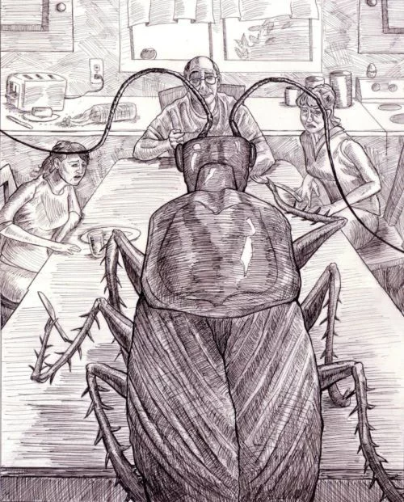
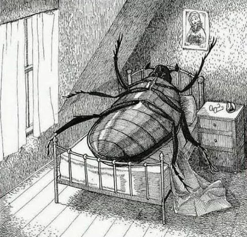
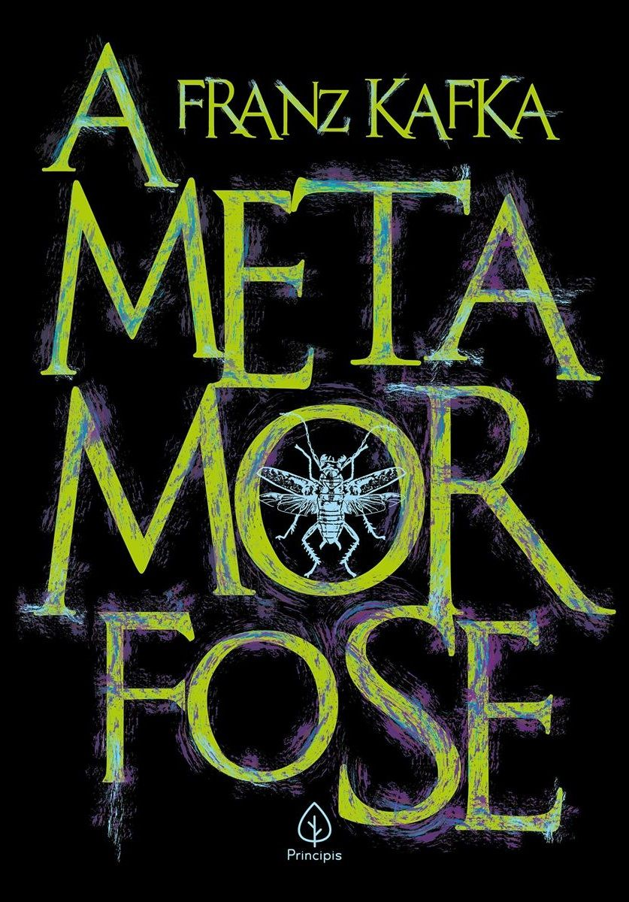
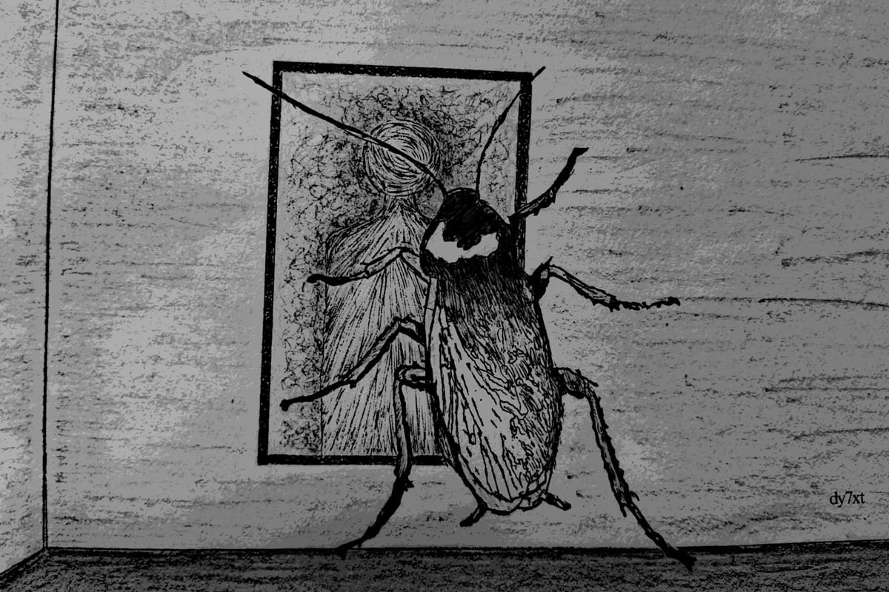
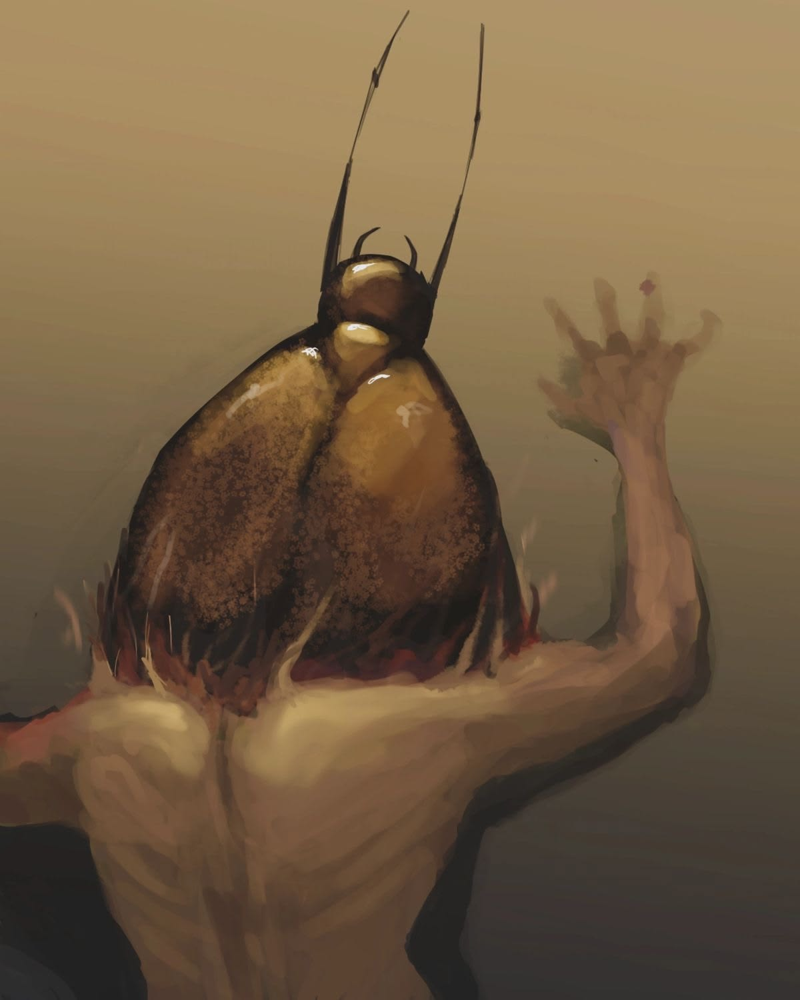

A história de Gregor Samsa, um caixeiro-viajante que acorda transformado em um inseto gigante. Ele luta para se adaptar à sua nova forma e enfrenta a rejeição de sua família e da sociedade. A narrativa explora temas como alienação, identidade e a condição humana.
Quiz é um gênero textual interativo formado por uma sequência de perguntas e respostas, geralmente elaborado com o objetivo de testar conhecimentos, estimular a participação do leitor ou proporcionar entretenimento. Sua linguagem costuma ser clara, objetiva e dinâmica, podendo apresentar alternativas de resposta ou perguntas diretas sobre determinado tema.